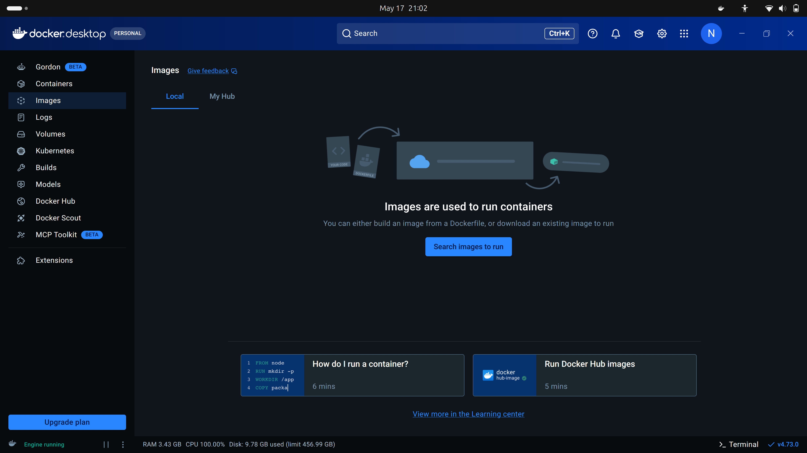
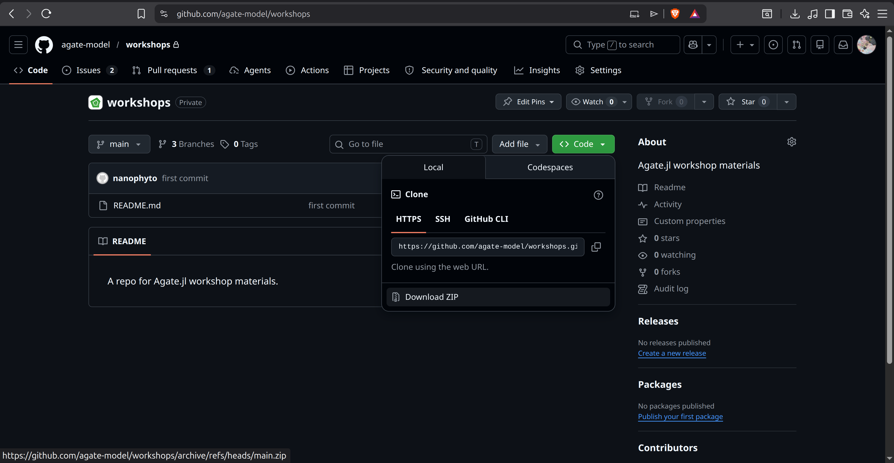
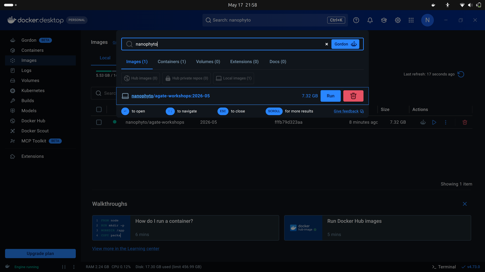
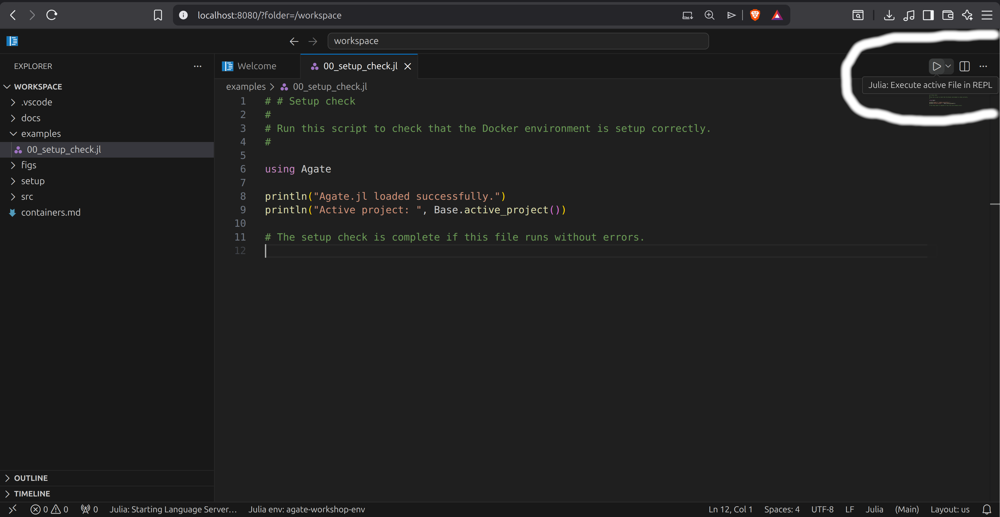

Setup
This page explains how to install and run the container for the Agate.jl workshop.
The workshop uses Docker so that everyone can run the same software environment without having to install Julia and associated packages manually. The workshop materials are stored separately on GitHub. You will download the materials to your own computer, then attach that folder to the Docker container.
Step 1: Install Docker Desktop
Install Docker Desktop from:
https://www.docker.com/products/docker-desktop/
Choose the installer for your operating system:
- macOS: choose the correct version for your Mac, either Apple Silicon or Intel.
- Windows: Docker Desktop may ask you to restart your computer during installation.
- Linux: follow the Docker Desktop instructions for your distribution.
After installation, open Docker Desktop and wait until it says Docker is running.
Docker Desktop may ask you to sign in or create an account. You should be able to skip this for the workshop. If you already have a Docker account, signing in is also fine.
Once you open Docker Desktop you should see something like below:

Step 2: Download the workshop materials from GitHub
You need a local copy of the workshop materials before starting the container.
There are two options:
- A. Download manually from the browser — recommended if you do not use Git.
- B. Clone with Git — recommended if you already use Git.
Option A: download manually from the browser
Open the workshop repository:
Click the green Code button.

Click Download ZIP.
Unzip the downloaded file.
Inside the unzipped folder, find the workshop folder:
2026-05Move this folder somewhere easy to find, for example:
- macOS:
Documents/AgateWorkshop/2026-05 - Windows:
Documents\AgateWorkshop\2026-05 - Linux:
~/AgateWorkshop/2026-05
- macOS:
This 2026-05 folder is the folder you will attach to Docker as a Volume.
Option B: clone with Git
If you already use Git, open a terminal and run:
git clone https://github.com/agate-model/workshops.gitThen move into the workshop folder:
cd workshops/2026-05The folder workshops/2026-05 is the folder you will attach to Docker as a Volume.
Check the folder
Whichever option you used, the workshop folder should contain files or folders such as:
examples/
docs/
setup/
README.mdStep 3: Download the workshop image
In Docker Desktop, open the Images section and search for:
nanophyto/agate-workshopsPull the workshop image with the tag:
2026-05The full image name is:
nanophyto/agate-workshops:2026-05
The download may take some time. Please make sure you have a stable internet connection and enough free disk space, approximately 7.5 GB or more, before starting.
Terminal option
If you are comfortable using a terminal, you can pull the image with:
docker pull nanophyto/agate-workshops:2026-05This does the same thing as pulling the image through Docker Desktop.
Step 4: Start the workshop container and attach the materials as a Volume
Once the image has downloaded, start it from Docker Desktop.
- Go to Images.
- Find
nanophyto/agate-workshops. - Select the
2026-05tag. - Click Run.
- Open Optional settings.
Use the following settings:
| Setting | Value |
|---|---|
| Container name | agate-workshop |
| Host port | 8080 |
| Container port | 8080 |
| Host path | the 2026-05 workshop folder on your computer |
| Container path | /workspace |
The Host path is the folder you downloaded from GitHub. For example:
Documents/AgateWorkshop/2026-05The Container path must be exactly:
/workspaceThis Volume setting is important. It lets the container see the workshop files, and it lets your edited examples, outputs, and figures be saved back to your own computer.
If port 8080 is already in use on your computer, use another host port such as 8090. Keep the container port as 8080.
Click Run to start the container.
On Windows, you may be asked whether Docker is allowed to access private or public networks. Allow access so that your browser can connect to the VS Code server running inside the container.
Terminal option
If you prefer the terminal, run the command from inside the 2026-05 workshop folder.
On macOS or Linux:
docker run --rm -p 8080:8080 -v "$PWD:/workspace" nanophyto/agate-workshops:2026-05On Windows PowerShell:
docker run --rm -p 8080:8080 -v "${PWD}:/workspace" nanophyto/agate-workshops:2026-05If port 8080 is already busy, use another host port, for example:
docker run --rm -p 8090:8080 -v "$PWD:/workspace" nanophyto/agate-workshops:2026-05On Windows PowerShell:
docker run --rm -p 8090:8080 -v "${PWD}:/workspace" nanophyto/agate-workshops:2026-05In that case, open http://localhost:8090 instead of http://localhost:8080.
Step 5: Open VS Code server in your browser
After the container starts, open your web browser and go to:
If you used a different host port, replace 8080 with that number. For example:
You should see a VS Code interface. This is where we will run the workshop examples.
The file browser inside VS Code should show the contents of the workshop folder. If it does not, the Volume was probably not configured correctly. Stop the container and check that:
- the Host path points to the local
2026-05folder; - the Container path is
/workspace.
Step 6: Check that the environment works
Inside VS Code, open the setup check script in the workshop folder. It should be in:
examples/00_setup_check.jlYou can run the script from the GUI by pressing the play icon:

Alternatively, you can run the script from the VS Code terminal:
julia examples/00_setup_check.jlThe check should confirm that Julia starts and that the main workshop packages can be loaded.
You can also check the Julia environment manually by opening a Julia REPL and running:
Base.active_project()It should point to the workshop environment inside the container.